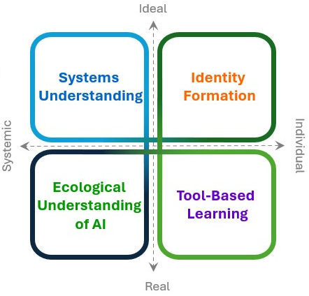

EcoAI framework: Un Modello Pedagogico per l'Antropocene
Il framework EcoAI propone un approccio interdisciplinare per integrare Ecoliteracy e Intelligenza Artificiale (AI) nell'educazione civica delle scuole secondarie, formando una nuova generazione di cittadini ecotecnologici.
Obiettivi della Ricerca
- Esplorare le percezioni degli studenti su sostenibilità e AI.
- Analizzare l'intersezione tra literacy ambientale e digitale.
- Sviluppare un modello pedagogico integrato per l'educazione civica.
Domande di Ricerca
- Come gli studenti percepiscono l'impatto dell'AI sulle questioni ambientali?
- Qual è il livello di ecoliteracy e competenze civiche ambientali dei giovani?
- Come i media digitali influenzano la cittadinanza ecologica?
Cornice Teorica
- Postumanesimo Eco-digitale: Elaborazione teorica della teoria ecodigitale postumanista.
- Ecomedia Literacy: Analisi critica dell'impatto ecologico delle tecnologie mediali.
- Educazione Civica Digitale e SDGs: Contesto normativo nazionale ed internazionale di riferimento.
Fondamenti scientifici del Framework
Di seguito sono disponibili il fondamento teorico del Framework EcoAI definito Postumanesimo Eco-digitale e
la review sistematica e bibliometrica su Ecoliteracy e Social Media.
Il primo elabora la cornice epistemologica e pedagogica che integra postumanesimo, ecoliteracy e AI literacy, delineando i quattro quadranti del framework.
Costituisce il riferimento concettuale che sottende ai domini e sottodomini, fornendo criteri di coerenza teorica e rigore metodologico e stabilendo la base scientifica e filosofica su cui si innesta l’intera architettura EcoAI.
La review sistematica e bibliometrica costituisce la base teorico-empirica del Framework EcoAI.
Analizza la letteratura internazionale di uno dei campi ecomediali interessati dal Framework: Ecoliteracy e Social Media, fornendo indicatori
validati e una mappatura dei trend di ricerca, garantendo trasparenza, replicabilità e un collegamento diretto con la comunità scientifica.
Nell'EcoAI framework contribuisce a definire il contesto di referenzialità per il dominio
Identity Formation, con particolare attenzione ai sottodomini
Ecodigital Positionality & Imaginaries e
Algorithmic Bias, Fairness & Representation.
I Quattro Quadranti del Framework EcoAI

Il framework si articola in quattro domini interconnessi che guidano lo sviluppo di competenze eco-digitali integrate. Clicca su ciascun quadrante per esplorarne i dettagli.
Systems Understanding
Sotto‑domini (clicca per espandere) ▼
Ecosystem Dynamics
Feedback Loops & Patterns
Systems Literacy (Complexity Education)
Sympoietic Thinking Models
Non-linear cause-effect relations
Explainable AI Labs
Rubrica — Systems Understanding ▼
| Competenza (GreenComp / AI Literacy → EcoAI) | Base | Intermedio | Avanzato | Critico |
|---|---|---|---|---|
| Ecosystem dynamics (G1/G4) & Understanding/Evaluating AI | Riconosce componenti e interazioni chiave in sistemi ecologici; distingue flussi naturali vs. artificiali. | Descrive cicli (es. acqua, carbonio) e come attività umane/IA interagiscono con essi usando osservazioni o piccoli dataset. | Mappa interdipendenze tra processi ecologici e processi mediati dall’IA; usa visualizzazioni o simulazioni per esplorare dinamiche. | Progetta attività che collegano indicatori ecologici e strumenti IA su più scale, valutando impatti sistemici e trade-off. |
| Feedback loops & patterns (G1/G4/G3) & Understanding/Evaluating AI | Identifica semplici feedback rinforzanti o bilancianti e pattern ricorrenti. | Traccia strutture stock-and-flow e ritardi; disegna un semplice causal-loop diagram (CLD). | Costruisce mappe dinamiche e testa il comportamento dei loop con strumenti IA (es. ABM/NetLogo). | Progetta interventi considerando dominanza dei loop, resilienza e effetti inattesi; valuta gli esiti con evidenze. |
| Systems Literacy (G1/G2/G4) & Understanding/Critiquing/Evaluating | Riconosce non-linearità e incertezza; distingue un sistema da un insieme di parti. | Spiega emergenza/adattività con esempi concreti; adotta prospettive transdisciplinari per leggere sistemi eco-digitali. | Applica confini, feedback, soglie a casi eco-digitali; confronta modelli e assunzioni. | Integra il ragionamento sistemico in decisioni/policy; giustifica scelte di modellazione e limiti; riflette su etica/implicazioni sistemiche. |
| Sympoietic thinking (G11/G7/G1) & Designing/Interacting/Critiquing | Riconosce che umani, tecnologie e ambienti co-producono esiti. | Descrive scenari di making-with in cui umani e IA collaborano su compiti ecologici. | Spiega come umani, IA ed elementi naturali si plasmino reciprocamente in progetti; documenta co-agency e apprendimento. | Progetta e guida moduli che dimostrano co-creazione e responsabilità condivisa tra umani, non-umani e agenti algoritmici. |
| Non-linear cause–effect relations (G1/G4) & Understanding/Evaluating | Identifica relazioni causa-effetto semplici e dirette. | Riconosce effetti ritardati, indiretti o inattesi. | Spiega tipping points e feedback composti in sistemi ambientali/IA con esempi o simulazioni. | Progetta scenari/interventi che anticipano dinamiche non lineari e conseguenze indesiderate in sistemi eco-digitali. |
| Explainable AI Labs (G2/G4/G1) & Understanding/Evaluating/Critiquing | Comprende che le decisioni IA possono essere esplorate con spiegazioni semplici (es. feature importance). | Interpreta output XAI di base (saliency/attribution) e ne discute affidabilità e limiti. | Usa metodi XAI per analizzare decisioni di modelli eco-digitali; comunica percorsi decisionali, assunzioni e incertezze. | Progetta attività di laboratorio che integrano XAI per audit/migliorare modelli ecologici; valuta etica, trasparenza e trade-off. |
Ecological Understanding of AI
Sotto‑domini (clicca per espandere) ▼
Ecosistemi Digitali e Infrastrutture
Consumo Energia AI
Giustizia Ambientale e Climatica
Analisi Ecopolitica della Tecnologia
Agenzia eco-digitale ibrida
Consapevolezza della privacy digitale
Rubrica — Ecological Understanding of AI ▼
| Competenza (GreenComp / AI Literacy → EcoAI) | Base | Intermedio | Avanzato | Critico |
|---|---|---|---|---|
| Sustainability Justice (G12) & Critiquing AI | Riconosce ingiustizie ambientali di base e che i dispositivi digitali hanno impatto ambientale. | Collega disuguaglianze ambientali a tecnologie e dati (e-waste, data center); riconosce bias/limiti degli strumenti IA. | Raccoglie evidenze e propone cambiamenti per affrontare ingiustizie legate all’IA; valuta criticamente infrastrutture ed energia. | Guida progetti/campagne di giustizia ambientale algoritmica, sostenendo alternative sostenibili e responsabili nelle pratiche IA. |
| Digital ecosystems & infrastructures (EcoAI Specific) | Identifica componenti basilari dei dispositivi digitali e che consumano energia. | Descrive concetto di data center/cloud e la sua funzione. | Traccia il ciclo di vita di un dispositivo o la fonte energetica di un data center, individuando impatti chiave. | Analizza l’economia politica delle infrastrutture digitali (supply chain, controllo corporate) e le conseguenze eco-sociali globali. |
| AI energy consumption (EcoAI Specific) | Sa che l’IA usa energia. | Cita esempi di consumo (training, query). | Stima impronta carbonica/idrica di strumenti o attività IA e spiega i rebound effects. | Propone/valuta strategie sistemiche (policy, design, comportamenti) per ridurre l’impronta ambientale dell’IA. |
| Ecopolitical tech analysis (EcoAI Specific) | Esprime preoccupazioni generiche sugli impatti della tecnologia. | Individua regolazioni/policy di base su tecnologia o ambiente. | Analizza come incentivi economici o decisioni politiche influenzino l’impatto ambientale dell’IA. | Progetta e sostiene interventi ecopolitici (es. trasparenza supply chain, reporting carbonio obbligatorio per modelli IA). |
| Hybrid eco-digital agency (EcoAI Specific) | Riconosce che l’azione emerge da interazioni tra persone, ambienti e algoritmi. | Descrive esempi di azione co-regolata con l’IA in contesti eco-digitali. | Progetta attività in cui attori umani, ecologici e algoritmici coordinano obiettivi di sostenibilità. | Guida progetti con agency distribuita e responsabilità condivisa, valutando esiti e rischi in scenari situati. |
| Digital Privacy Awareness (EcoAI Specific) | Comprende che dati personali/ambientali possono essere raccolti/archiviati da sistemi digitali. | Individua rischi di base (consenso, tracking, sorveglianza) in attività eco-digitali. | Applica privacy-by-design (minimizzazione, limitazione di scopo) e valuta i trade-off monitoraggio/diritti. | Definisce misure di governance e linee guida comunitarie che bilanciano esigenze di dati ambientali con robuste tutele della privacy. |
Tool-Based Learning
Sotto‑domini (clicca per espandere) ▼
Contenuti generati con AI e Simulazioni
Moduli di Apprendimento Ibridi
Interazione Umano-AI situata
Sperimentazioni Pedagogiche
Creatività multimodale
AI generativa per la sostenibilità
Rubrica — Tool-Based Learning ▼
| Competenza (GreenComp / AI Literacy → EcoAI) | Base | Intermedio | Avanzato | Critico |
|---|---|---|---|---|
| AI-generated content & simulations (G5/G6) & Interacting/Designing → Tool-Based Learning | Riconosce contenuti generati dall’IA e semplici output di simulazione; segue prompt guidati. | Interpreta punti di forza/limiti degli output sintetici; avvia/adatta simulazioni base per scenari ecologici. | Costruisce workflow che combinano contenuti IA e simulazioni per esplorare processi ecologici/policy. | Progetta cicli d’indagine con validazione, controlli di bias e riflessione sugli impatti. |
| Hybrid learning modules (G5/G6) & Designing/Interacting → Tool-Based Learning | Partecipa ad attività blended che combinano temi ecologici e strumenti digitali. | Combina risorse e contesti (classe/campo/online) per obiettivi eco-formativi specifici. | Co-progetta moduli integrando IA, dati locali e azione civica; adatta a vincoli e feedback. | Guida moduli scalabili allineando obiettivi, valutazione e impatto di comunità; documenta trasferibilità. |
| Situated human–AI interaction (G5/G6) & Interacting/Evaluating → Tool-Based Learning | Usa strumenti IA/sensori in un luogo specifico con guida; osserva vincoli di contesto. | Raccoglie e interpreta dati locali con supporto IA; riflette su accuratezza e calibrazione. | Coordina compiti umano-IA in situ per costruire evidenze per decisioni eco; documenta incertezze. | Progetta protocolli situati bilanciando performance, sicurezza, privacy ed etica ecologica; valuta esiti. |
| Pedagogical digital experimentation (G5/G6) & Designing/Evaluating → Tool-Based Learning | Esplora funzionalità di uno strumento digitale/IA per un compito; segue istruzioni. | Itera piccoli esperimenti; confronta configurazioni e registra osservazioni. | Progetta lab con ipotesi, variabili e criteri di successo; analizza risultati. | Stabilisce pratiche riproducibili (versioning, documentazione, etica) e condivide materiali open. |
| Creatività multimodale (G5/G6) & Interacting/Designing → Tool-Based Learning | Combina due modalità (es. testo+immagine) per comunicare un’idea ecologica. | Integra più modalità (testo, immagine, suono, mappe) con assistenza IA per spiegare relazioni. | Produce artefatti multimodali coesi per comunicazione pubblica con feedback del pubblico. | Guida progetti multimodali inclusivi; assicura accessibilità, provenienza e licenze. |
| AI generativa per la sostenibilità (G5/G6) & Interacting/Designing/Evaluating → TBL | Usa IA generativa per compiti di sostenibilità con guida; rileva errori evidenti. | Pianifica prompt/constraint per raggiungere obiettivi eco; controlla rilevanza e fattualità di base. | Costruisce pipeline che collegano output generativi a dati/simulazione/codice; traccia impronta e privacy. | Progetta/valuta soluzioni gen-AI rispetto a bias, privacy, metriche carbonio/acqua e riproducibilità; riporta impatti. |
Identity Formation
Sotto‑domini (clicca per espandere) ▼
Agenzia ecodigitale
Bias, Fairness & responsabilità algoritmica
Identità e cittadinanza postumana ecodigitale
Valutazione di impatto etico (ex ante/ex post)
Rubrica — Identity Formation ▼
| Competenza (GreenComp / AI Literacy → EcoAI) | Base | Intermedio | Avanzato | Critico |
|---|---|---|---|---|
| Agenzia ecodigitale (G7, G8) | Riconosce che l’agency può essere distribuita tra persone, ambienti e strumenti; partecipa se sollecitato. | Descrive esempi di azione co-regolata con l’IA in compiti eco-digitali situati; riflette su ruoli/responsabilità. | Progetta/esegue attività di gruppo dove attori umani, ecologici e algoritmici coordinano obiettivi di sostenibilità; documenta decisioni. | Guida, valuta e itera progetti con agency distribuita; riporta impatti/ rischi/ mitigazioni; fa mentoring e trasferisce pratiche. |
| Bias, Fairness & responsabilità algoritmica (G11, G7) | Individua casi semplici di bias/iniquità in contesti mediati dall’IA; riconosce gruppi colpiti. | Spiega come dati, design e deployment influenzano gli esiti; mappa responsabilità tra attori. | Applica controlli di fairness e documentazione (model cards, data sheets) e propone mitigazioni/oversight per usi eco-digitali. | Progetta piani di governance e rimedio; coordina audit e comunica accountability; sostiene cambiamenti di policy. |
| Identità e cittadinanza postumana ecodigitale (G11, G8) | Riconosce prospettive più-che-umane ed esprime cura verso agenti non-umani e algoritmici. | Articola appartenenza eco-digitale e vulnerabilità condivisa; pratica inclusione tra umano/non-umano/algoritmico. | Partecipa ad azioni di comunità con stakeholder umani, non-umani e algoritmici; media conflitti e integra saperi diversi. | Guida iniziative che plasmano norme civiche più-che-umane; istituzionalizza pratiche di cura, reciprocità e giustizia ecologica. |
| Valutazione di impatto etico (ex ante/ex post) (G7, G11) | Comprende la necessità di considerare stakeholder, rischi e benefici; usa checklist semplici per consenso/uso dati. | Pianifica EIA ex-ante con criteri di governance dei dati e impronta ambientale; fissa metriche di successo e soglie di rischio. | Conduce audit ex-post rispetto ai criteri; pubblica report trasparenti e propone azioni correttive e salvaguardie. | Orchestra l’intero ciclo EIA in cornici di governance; progetta metriche, escalation e feedback loop; assicura accountability e miglioramento continuo. |
Esplora le competenze del framework o la validazione empirica dell'EcoAI Index.
Sviluppo delle Competenze
Il framework allinea le competenze EcoAI con il modello europeo GreenComp, definendo quattro livelli di padronanza. Seleziona una competenza per visualizzare i descrittori di livello.
Base
Riconosce la differenza tra un sistema naturale e uno artificiale.
Intermedio
Descrive feedback e cicli in entrambi i sistemi.
Avanzato
Confronta e mappa complesse interdipendenze tra IA e sistemi naturali.
Critico
Progetta attività che dimostrano una profonda interdipendenza tra IA e biosfera.
Relazione tra Quadranti e Aree GreenComp
Quadri fondativi per lo sviluppo e la valutazione delle competenze EcoAI
La robustezza valutativa di EcoAI si fonda sull’integrazione profonda con standard consolidati di educazione alla sostenibilità e di AI literacy. In particolare, il framework assume come riferimento primario GreenComp e lo integra con modelli di alfabetizzazione all’AI (Long & Magerko; AICOS; Generative AI Literacy) per ottenere una strategia valutativa multilivello che coniuga profondità qualitativa e rigore quantitativo.
GreenComp: quadro europeo delle competenze per la sostenibilità
GreenComp articola la competenza di sostenibilità in quattro aree e dodici sotto-competenze (tra cui: Systems thinking – G1, Critical thinking – G2, Agency – G7, Sustainability justice – G12). EcoAI adatta esplicitamente GreenComp, definendo quattro livelli di padronanza – Base, Intermedio, Avanzato, Critico – e rubriche già contestualizzate agli scenari eco‑digitali. Questa corrispondenza fornisce un linguaggio comune e riconosciuto a livello europeo per descrivere la progressione delle competenze, facilitando comparabilità e trasferibilità degli esiti formativi.
AI Literacy: Long & Magerko, AICOS e Generative AI Literacy
Il framework integra più modelli per coprire in modo completo le dimensioni dell’alfabetizzazione all’AI e Linee guida ministeriali per l’introduzione dell’Intelligenza Artificiale nelle scuole. Il modello di Long & Magerko (Understanding, Interacting, Critiquing, Designing, Evaluating) è mappato sui quadranti EcoAI (ad es. Understanding → Systems Understanding; Interacting → Tool‑Based Learning; Critiquing → Identity Formation; Designing → Hybrid modules; Evaluating → Digital ecosystems). AICOS fornisce una scala quantitativa validata per la misurazione dell’AI literacy (dimensioni quali: comprensione dell’AI, lavoro con l’AI, impatto sociale, bias/fairness, decisione e responsabilità), utile come benchmark psicometrico per verificare le rubriche e i questionari (α di Cronbach > .8). La Generative AI Literacy (Annapureddy et al.) arricchisce in modo specifico il dominio Tool‑Based Learning con competenze operative e riflessive sui sistemi generativi.
Ne risulta una validazione a più strati: GreenComp struttura i livelli qualitativi; i descrittori specifici per l’AI si appoggiano a Long & Magerko e a Generative AI Literacy; AICOS consente la validazione quantitativa degli item e delle scale. Insieme, questi elementi garantiscono ampiezza di copertura, coerenza teorica e solidità empirica.
Tabella di allineamento consolidata (Quadranti ↔ Competenze ↔ AI Literacy ↔ SDG)
| Quadrante EcoAI framework | Competenze GreenComp chiave | AI Literacy (Long & Magerko) | SDG associati |
|---|---|---|---|
| Systems Understanding | G1, G2, G3, G4, G9, G10, G11 | Understanding / Evaluating | 4, 13, 15, 17 |
| Ecological Understanding of AI | G4, G12 | Critiquing / Evaluating | 4, 9, 12, 13, 16 |
| Tool‑Based Learning | G5, G6 | Interacting / Designing | 4, 9, 11, 12, 13 |
| Identity Formation | G7, G8, G11 | Interacting / Critiquing / Designing | 4.7, 5, 10, 16 |
Integrazione degli SDG nel contesto europeo e italiano
L'apporccio del Framework EcoAI punta all’approfondire i legami già
delineati negli SDG e costruendo collegamenti mirati con gli obiettivi più pertinenti. Ad esempio, per AI energy consumption
(SDG 10 e 13), è rilevante sviluppare moduli che stimino l’impronta carbonica e idrica dei sistemi di AI, analizzando al contempo
la distribuzione diseguale dei costi ecologici. Analogamente, attraverso gli Hybrid learning modules (SDG 4.7), è possibile
attivare pratiche di cittadinanza globale che coinvolgano la collaborazione umano-AI su problematiche ambientali transnazionali.
Le rubriche EcoAI già integrano tali connessioni, incorporando in maniera esplicita i target SDG nei descrittori di livello.
Al livello Critico della competenza Agency, ad esempio, è prevista la capacità di proporre interventi assistiti da AI
per la giustizia climatica in coerenza con il target 13, o di contribuire a partnership multi-attore per l’innovazione sostenibile
in linea con il target 17. In questo modo, il framework non considera gli SDG come elementi esterni, ma come riferimenti costitutivi
già intrecciati nella propria architettura pedagogica.
Allineamento con gli Obiettivi di Sviluppo Sostenibile (SDG)
Il framework EcoAI contribuisce direttamente a numerosi Obiettivi di Sviluppo Sostenibile delle Nazioni Unite, promuovendo un'educazione per un futuro equo e sostenibile.

SDG 4: Istruzione di Qualità
Connesso a: Systems Understanding, Tool-Based Learning, Identity Formation

SDG 9: Industria, Innovazione e Infrastrutture
Connesso a: Ecological Understanding of AI, Tool-Based Learning

SDG 10: Ridurre le Disuguaglianze
Connesso a: Identity Formation, Environmental Justice

SDG 11: Città e Comunità Sostenibili
Connesso a: Tool-Based Learning

SDG 12: Consumo e Produzione Responsabili
Connesso a: Ecological Understanding of AI

SDG 13: Lotta al Cambiamento Climatico
Connesso a: Systems Understanding, Ecological Understanding of AI

SDG 15: Vita sulla Terra
Connesso a: Systems Understanding

SDG 16: Pace, Giustizia e Istituzioni Solide
Connesso a: Ecological Understanding of AI, Identity Formation

SDG 17: Partnership per gli Obiettivi
Connesso a: Systems Understanding